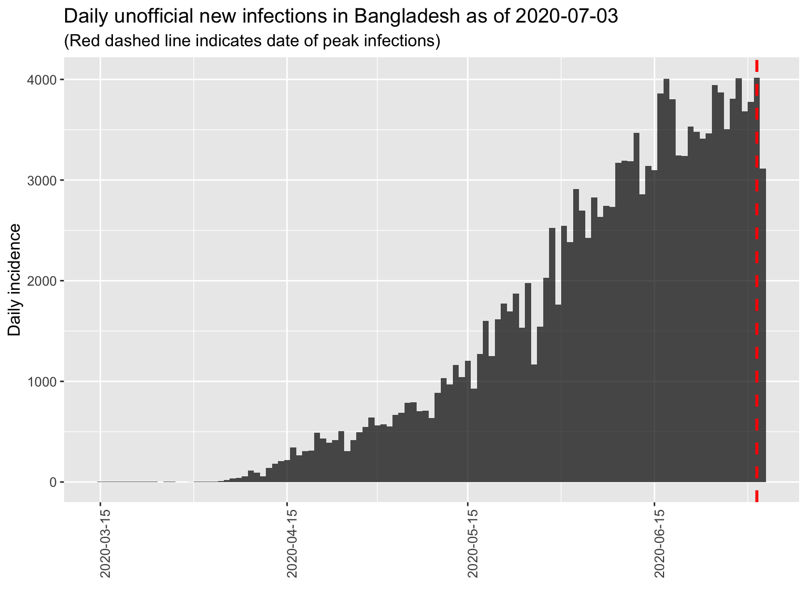
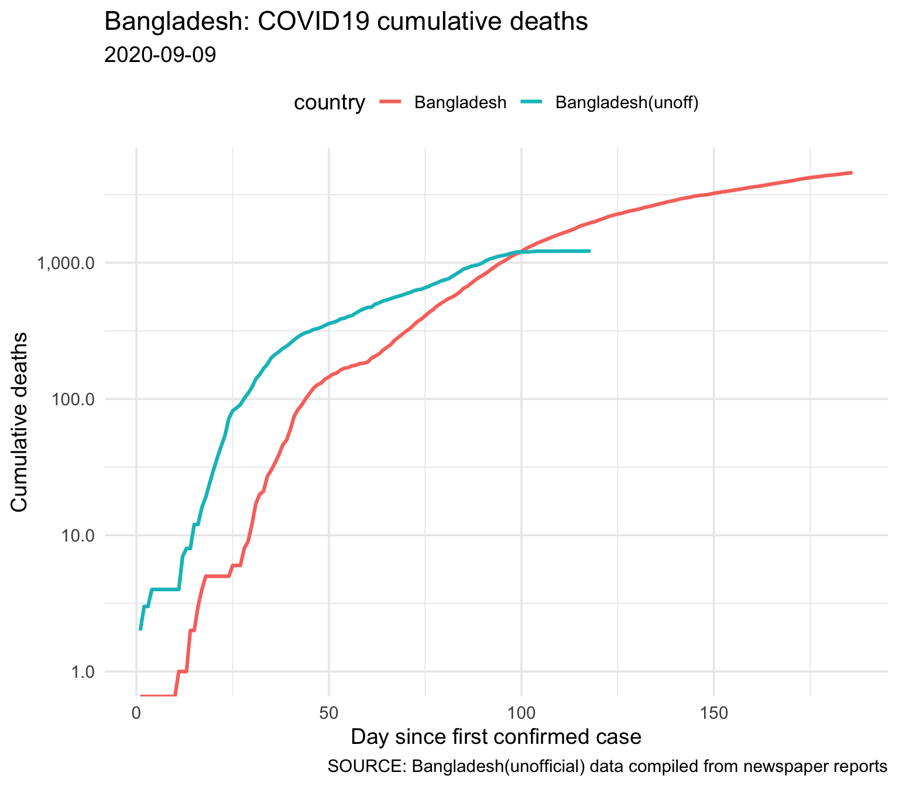
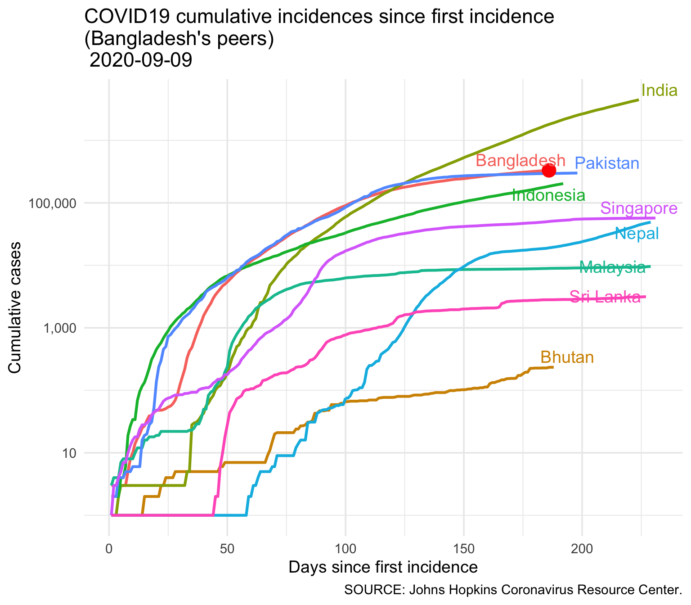
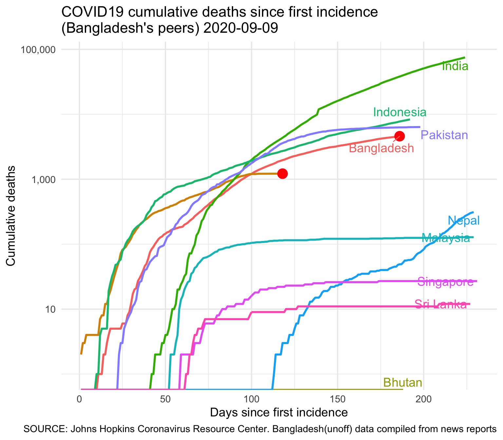

Report 3 Bangladesh
This report is created based on a publicly available data. The data are available on a Google Sheet. Please see the Data Source section for link. Please note that publicly available data are not official and MAY BE UNRELIABLE. I personally did not verify them. I am using them for educational purposes. Use at your discretion.
3.1 Epidemic curve and search for peak
The epidemic curve for Bangladesh and a tentative peak. The red line in the plot indicates a potential peak based on available data. IF the peak (red line) is at the far right, then we may not have reached a peak yet. We must have sustained decrease of incidences to be sure about any peak.

We fit a log linear model to estimate the doubling time (growh phase) and halving time (decline phase, when that happens). The estimated fitted line (solid line) with 95% confidence interval (dotten lines) are superimposed on the epidemic curve below.

The current doubling time as of 2020-06-15 is 8.1 days with a 95% confidence interval of (7.4, 8.9) days.
3.1.1 Estimating the Overall Reproduction Number, \(R_0\)
The log-linear model estimates the \(R_0\) as follows:

## Min. 1st Qu. Median Mean 3rd Qu. Max.
## 1.644 1.718 1.743 1.747 1.766 1.8893.1.2 Estimating the Effectuve Reproduction Number (\(R_e\))
The estimation of effective reproduction number involves the distribution of serial interval (SI). Based on the literature (REF to be added), a gamma distribution with mean 6 and standard deviation 3.5

3.1.3 Simulating the \(R_e\) on Weekly Window
Now we perform a simulation of different SI distribution to obtain the \(R_e\). For this, we vary the parameters of gamma distribution and obtain the following.
# Recalculating with varying SI distribution parameters
# we get these results:
config = make_config(list(mean_si = 7.5, std_mean_si = 3.5,
min_mean_si = 2, max_mean_si =10.0,
std_si = 3.5, std_std_si = 1,
min_std_si = 0.5, max_std_si = 4))
bd_res_uncertain_si <-
estimate_R(bd_confirmed_cases$daily_cases, method = "uncertain_si",
config = config)
plot_Ri(bd_res_uncertain_si)
| t_start | t_end | Mean(R) | Std(R) | Quantile.0.025(R) | Quantile.0.975(R) | |
|---|---|---|---|---|---|---|
| 86 | 87 | 93 | 1.261802 | 0.1259637 | 1.062509 | 1.484692 |
| 87 | 88 | 94 | 1.225683 | 0.1135576 | 1.051652 | 1.435931 |
| 88 | 89 | 95 | 1.208245 | 0.0999434 | 1.059500 | 1.398635 |
| 89 | 90 | 96 | 1.209736 | 0.0882317 | 1.074315 | 1.376753 |
| 90 | 91 | 97 | 1.205355 | 0.0795897 | 1.072526 | 1.352384 |
| 91 | 92 | 98 | 1.179530 | 0.0727596 | 1.051170 | 1.308165 |
| 92 | 93 | 99 | 1.167444 | 0.0673145 | 1.050511 | 1.283856 |
The effective reproduction number based on the last week’s incidences show an average of 1.17 with a 95% confidence interval (1.05, 1.28).
3.1.4 Simulating \(R_e\) on a Monthly Sliding Window
| t_start | t_end | Mean(R) | Std(R) | Quantile.0.025(R) | Quantile.0.975(R) | |
|---|---|---|---|---|---|---|
| 40 | 41 | 70 | 1.390431 | 0.1590459 | 1.102354 | 1.656411 |
| 41 | 42 | 71 | 1.385163 | 0.1536130 | 1.113777 | 1.643478 |
| 42 | 43 | 72 | 1.396144 | 0.1505105 | 1.130044 | 1.651452 |
| 43 | 44 | 73 | 1.380745 | 0.1467626 | 1.114385 | 1.629230 |
| 44 | 45 | 74 | 1.375956 | 0.1432758 | 1.115442 | 1.616699 |
| 45 | 46 | 75 | 1.381168 | 0.1414059 | 1.122620 | 1.617569 |
| 46 | 47 | 76 | 1.381113 | 0.1407301 | 1.120426 | 1.613421 |
| 47 | 48 | 77 | 1.385962 | 0.1412228 | 1.123869 | 1.617457 |
| 48 | 49 | 78 | 1.366846 | 0.1401038 | 1.105664 | 1.594801 |
| 49 | 50 | 79 | 1.375947 | 0.1397878 | 1.120834 | 1.604797 |
| 50 | 51 | 80 | 1.341183 | 0.1363619 | 1.091273 | 1.564429 |
| 51 | 52 | 81 | 1.320766 | 0.1306442 | 1.087751 | 1.537712 |
| 52 | 53 | 82 | 1.318296 | 0.1252991 | 1.098393 | 1.529689 |
| 53 | 54 | 83 | 1.329139 | 0.1219862 | 1.113367 | 1.536239 |
| 54 | 55 | 84 | 1.312620 | 0.1183814 | 1.095119 | 1.512126 |
| 55 | 56 | 85 | 1.323396 | 0.1163107 | 1.109761 | 1.518483 |
| 56 | 57 | 86 | 1.326329 | 0.1160361 | 1.108962 | 1.516960 |
| 57 | 58 | 87 | 1.340001 | 0.1177661 | 1.117313 | 1.530661 |
| 58 | 59 | 88 | 1.342422 | 0.1204380 | 1.112190 | 1.534396 |
| 59 | 60 | 89 | 1.331160 | 0.1218297 | 1.099979 | 1.523629 |
| 60 | 61 | 90 | 1.329522 | 0.1223804 | 1.102368 | 1.525146 |
| 61 | 62 | 91 | 1.322249 | 0.1216698 | 1.098479 | 1.518363 |
| 62 | 63 | 92 | 1.315936 | 0.1201148 | 1.097284 | 1.511539 |
| 63 | 64 | 93 | 1.309670 | 0.1177293 | 1.095935 | 1.503543 |
| 64 | 65 | 94 | 1.306487 | 0.1151754 | 1.097819 | 1.498214 |
| 65 | 66 | 95 | 1.299021 | 0.1123277 | 1.094177 | 1.485501 |
| 66 | 67 | 96 | 1.292266 | 0.1095996 | 1.091497 | 1.473918 |
| 67 | 68 | 97 | 1.286970 | 0.1069713 | 1.090842 | 1.463566 |
| 68 | 69 | 98 | 1.271316 | 0.1038664 | 1.080282 | 1.442451 |
| 69 | 70 | 99 | 1.258847 | 0.1000116 | 1.077479 | 1.424433 |
The effective reproduction number based on the last months’s incidences show an average of 1.26 with a 95% confidence interval (1.08, 1.42).
3.1.5 Cumulative Deaths (official and unofficial)

| country | Total Deaths |
|---|---|
| Bangladesh(unoff) | 1182 |
| Bangladesh | 1171 |
3.2 Bangladesh in South Asia
3.2.1 Infection

| country | Total Cases |
|---|---|
| India | 320922 |
| Pakistan | 144478 |
| Bangladesh | 87520 |
| Bangladesh(unoff) | 87520 |
| Singapore | 40604 |
| Indonesia | 38277 |
| Malaysia | 8453 |
| Nepal | 5760 |
| Sri Lanka | 1889 |
| Bhutan | 66 |
3.2.2 Deaths

| country | Total Deaths |
|---|---|
| India | 9195 |
| Pakistan | 2729 |
| Indonesia | 2134 |
| Bangladesh(unoff) | 1182 |
| Bangladesh | 1171 |
| Malaysia | 121 |
| Singapore | 26 |
| Nepal | 19 |
| Sri Lanka | 11 |
| Bhutan | 0 |
3.2.3 Cases and deaths compared on a specific day
Bangladesh has entered into day 99 since first confirmed case.
| Country | Total cases | Total deaths |
|---|---|---|
| India | 56351 | 1889 |
| Indonesia | 32033 | 1883 |
| Pakistan | 80463 | 1688 |
| Bangladesh(unoff) | 87520 | 1182 |
| Bangladesh | 87520 | 1171 |
| Malaysia | 6176 | 103 |
| Singapore | 16169 | 15 |
| Sri Lanka | 751 | 8 |
| Bhutan | 62 | 0 |
| Nepal | 59 | 0 |